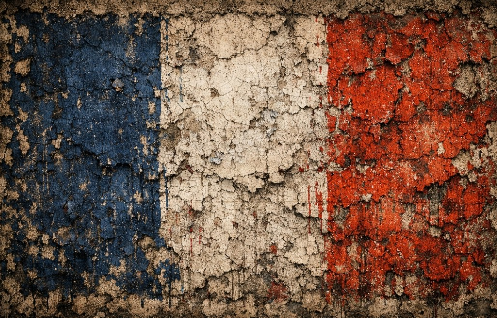
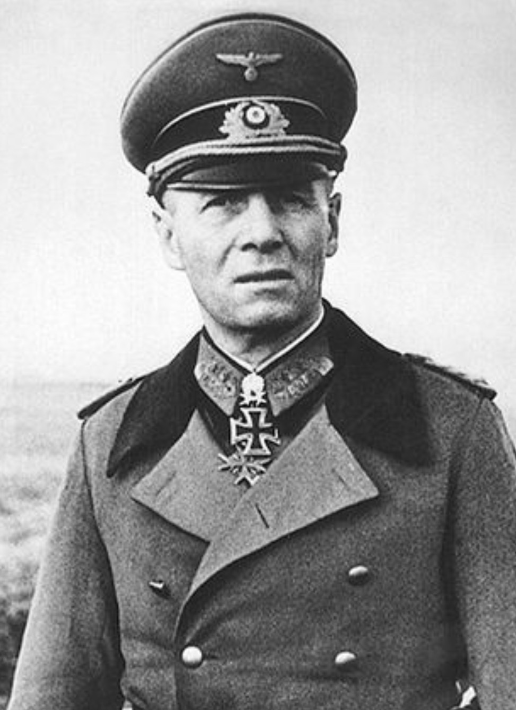

Nom complet : Erwin Johannes Eugen Rommel
Naissance : 15 novembre 1891, Heidenheim
Mort : 14 octobre 1944, Herrlingen
Grade : Feldmarschall
Rommel est l’un des commandants les plus connus de la Wehrmacht. Surnommé le « Renard du désert », il devient célèbre pour ses opérations rapides en Afrique du Nord, largement médiatisées par la propagande du Reich.
Commandant de l’Afrikakorps, Rommel mène plusieurs offensives majeures en Libye, Égypte et Tunisie. En 1944, il supervise la défense du Mur de l’Atlantique en France.
Blessé en juillet 1944, il est impliqué en marge du complot du 20 juillet contre Hitler, ce qui conduit à sa mort forcée.
Rommel reste une figure complexe : stratège reconnu, symbole médiatique, et officier pris dans les contradictions du régime nazi. Son image a été largement reconstruite après-guerre.